Annotate Misprime 6
Briana Mittleman
3/17/2020
Last updated: 2020-03-17
Checks: 7 0
Knit directory: Comparative_APA/analysis/
This reproducible R Markdown analysis was created with workflowr (version 1.6.0). The Checks tab describes the reproducibility checks that were applied when the results were created. The Past versions tab lists the development history.
Great! Since the R Markdown file has been committed to the Git repository, you know the exact version of the code that produced these results.
Great job! The global environment was empty. Objects defined in the global environment can affect the analysis in your R Markdown file in unknown ways. For reproduciblity it’s best to always run the code in an empty environment.
The command set.seed(20190902) was run prior to running the code in the R Markdown file. Setting a seed ensures that any results that rely on randomness, e.g. subsampling or permutations, are reproducible.
Great job! Recording the operating system, R version, and package versions is critical for reproducibility.
Nice! There were no cached chunks for this analysis, so you can be confident that you successfully produced the results during this run.
Great job! Using relative paths to the files within your workflowr project makes it easier to run your code on other machines.
Great! You are using Git for version control. Tracking code development and connecting the code version to the results is critical for reproducibility. The version displayed above was the version of the Git repository at the time these results were generated.
Note that you need to be careful to ensure that all relevant files for the analysis have been committed to Git prior to generating the results (you can use wflow_publish or wflow_git_commit). workflowr only checks the R Markdown file, but you know if there are other scripts or data files that it depends on. Below is the status of the Git repository when the results were generated:
Ignored files:
Ignored: .DS_Store
Ignored: .Rhistory
Ignored: .Rproj.user/
Ignored: code/chimp_log/
Ignored: code/human_log/
Ignored: data/.DS_Store
Ignored: data/mediation_prot/
Ignored: data/metadata_HCpanel.txt.sb-a5794dd2-i594qs/
Ignored: output/.DS_Store
Untracked files:
Untracked: ._.DS_Store
Untracked: Chimp/
Untracked: Human/
Untracked: analysis/CrossChimpThreePrime.Rmd
Untracked: analysis/DiffTransProtvsExpression.Rmd
Untracked: analysis/DiffUsedUTR.Rmd
Untracked: analysis/GvizPlots.Rmd
Untracked: analysis/HandC.TvN
Untracked: analysis/PhenotypeOverlap10.Rmd
Untracked: analysis/annotationBias.Rmd
Untracked: analysis/assessReadQual.Rmd
Untracked: analysis/diffExpressionPantro6.Rmd
Untracked: analysis/orthoexonAnno.Rmd
Untracked: analysis/pol2.Rmd
Untracked: code/._ClassifyLeafviz.sh
Untracked: code/._Config_chimp.yaml
Untracked: code/._Config_chimp_full.yaml
Untracked: code/._Config_human.yaml
Untracked: code/._ConvertJunc2Bed.sh
Untracked: code/._CountNucleotides.py
Untracked: code/._CrossMapChimpRNA.sh
Untracked: code/._CrossMapThreeprime.sh
Untracked: code/._DiffSplice.sh
Untracked: code/._DiffSplicePlots.sh
Untracked: code/._DiffSplicePlots_gencode.sh
Untracked: code/._DiffSplice_gencode.sh
Untracked: code/._DiffSplice_removebad.sh
Untracked: code/._FindIntronForDomPAS.sh
Untracked: code/._FindIntronForDomPAS_DF.sh
Untracked: code/._GetMAPQscore.py
Untracked: code/._GetSecondaryMap.py
Untracked: code/._Lift5perPAS.sh
Untracked: code/._LiftFinalChimpJunc2Human.sh
Untracked: code/._LiftOrthoPAS2chimp.sh
Untracked: code/._MapBadSamples.sh
Untracked: code/._PAS_ATTAAA.sh
Untracked: code/._PAS_ATTAAA_df.sh
Untracked: code/._PAS_seqExpanded.sh
Untracked: code/._PASsequences.sh
Untracked: code/._PASsequences_DF.sh
Untracked: code/._PlotNuclearUsagebySpecies.R
Untracked: code/._PlotNuclearUsagebySpecies_DF.R
Untracked: code/._QuantMergedClusters.sh
Untracked: code/._RNATranscriptDTplot.sh
Untracked: code/._ReverseLiftFilter.R
Untracked: code/._RunFixLeafCluster.sh
Untracked: code/._RunNegMCMediation.sh
Untracked: code/._RunNegMCMediationDF.sh
Untracked: code/._RunPosMCMediationDF.err
Untracked: code/._RunPosMCMediationDF.sh
Untracked: code/._SAF2Bed.py
Untracked: code/._Snakefile
Untracked: code/._SnakefilePAS
Untracked: code/._SnakefilePASfilt
Untracked: code/._SortIndexBadSamples.sh
Untracked: code/._assignPeak2Intronicregion
Untracked: code/._assignPeak2Intronicregion.sh
Untracked: code/._bed215upbed.py
Untracked: code/._bed2SAF_gen.py
Untracked: code/._buildIndecpantro5
Untracked: code/._buildIndecpantro5.sh
Untracked: code/._buildLeafviz.sh
Untracked: code/._buildLeafviz_leadAnno.sh
Untracked: code/._buildStarIndex.sh
Untracked: code/._chimpChromprder.sh
Untracked: code/._chooseSignalSite.py
Untracked: code/._cleanbed2saf.py
Untracked: code/._cluster.json
Untracked: code/._cluster2bed.py
Untracked: code/._clusterLiftReverse.sh
Untracked: code/._clusterLiftReverse_removebad.sh
Untracked: code/._clusterLiftprimary.sh
Untracked: code/._clusterLiftprimary_removebad.sh
Untracked: code/._converBam2Junc.sh
Untracked: code/._converBam2Junc_removeBad.sh
Untracked: code/._extraSnakefiltpas
Untracked: code/._extractPhyloReg.py
Untracked: code/._extractPhyloRegGene.py
Untracked: code/._extractPhylopReg200down.py
Untracked: code/._extractPhylopReg200up.py
Untracked: code/._filter5percPAS.py
Untracked: code/._filterNumChroms.py
Untracked: code/._filterPASforMP.py
Untracked: code/._filterPostLift.py
Untracked: code/._fixExonFC.py
Untracked: code/._fixLeafCluster.py
Untracked: code/._fixLiftedJunc.py
Untracked: code/._fixUTRexonanno.py
Untracked: code/._formathg38Anno.py
Untracked: code/._formatpantro6Anno.py
Untracked: code/._getRNAseqMapStats.sh
Untracked: code/._hg19MapStats.sh
Untracked: code/._humanChromorder.sh
Untracked: code/._intersectLiftedPAS.sh
Untracked: code/._liftJunctionFiles.sh
Untracked: code/._liftPAS19to38.sh
Untracked: code/._liftedchimpJunc2human.sh
Untracked: code/._makeNuclearDapaplots.sh
Untracked: code/._makeNuclearDapaplots_DF.sh
Untracked: code/._makeSamplyGroupsHuman_TvN.py
Untracked: code/._mapRNAseqhg19.sh
Untracked: code/._mapRNAseqhg19_newPipeline.sh
Untracked: code/._maphg19.sh
Untracked: code/._maphg19_subjunc.sh
Untracked: code/._mediation_test.R
Untracked: code/._mergeChimp3prime_inhg38.sh
Untracked: code/._mergeandBWRNAseq.sh
Untracked: code/._mergedBam2BW.sh
Untracked: code/._nameClusters.py
Untracked: code/._negativeMediation_montecarlo.R
Untracked: code/._negativeMediation_montecarloDF.R
Untracked: code/._numMultimap.py
Untracked: code/._overlapapaQTLPAS.sh
Untracked: code/._parseHg38.py
Untracked: code/._postiveMediation_montecarlo_DF.R
Untracked: code/._prepareCleanLiftedFC_5perc4LC.py
Untracked: code/._prepareLeafvizAnno.sh
Untracked: code/._preparePAS4lift.py
Untracked: code/._primaryLift.sh
Untracked: code/._processhg38exons.py
Untracked: code/._quantJunc.sh
Untracked: code/._quantJunc_TEST.sh
Untracked: code/._quantJunc_removeBad.sh
Untracked: code/._quantMerged_seperatly.sh
Untracked: code/._recLiftchim2human.sh
Untracked: code/._revLiftPAShg38to19.sh
Untracked: code/._reverseLift.sh
Untracked: code/._runCheckReverseLift.sh
Untracked: code/._runChimpDiffIso.sh
Untracked: code/._runCountNucleotides.sh
Untracked: code/._runFilterNumChroms.sh
Untracked: code/._runHumanDiffIso.sh
Untracked: code/._runNuclearDiffIso_DF.sh
Untracked: code/._runNuclearDifffIso.sh
Untracked: code/._runTotalDiffIso.sh
Untracked: code/._run_chimpverifybam.sh
Untracked: code/._run_verifyBam.sh
Untracked: code/._snakemake.batch
Untracked: code/._snakemakePAS.batch
Untracked: code/._snakemakePASchimp.batch
Untracked: code/._snakemakePAShuman.batch
Untracked: code/._snakemake_chimp.batch
Untracked: code/._snakemake_human.batch
Untracked: code/._snakemakefiltPAS.batch
Untracked: code/._snakemakefiltPAS_chimp
Untracked: code/._snakemakefiltPAS_chimp.sh
Untracked: code/._snakemakefiltPAS_human.sh
Untracked: code/._spliceSite2Fasta.py
Untracked: code/._submit-snakemake-chimp.sh
Untracked: code/._submit-snakemake-human.sh
Untracked: code/._submit-snakemakePAS-chimp.sh
Untracked: code/._submit-snakemakePAS-human.sh
Untracked: code/._submit-snakemakefiltPAS-chimp.sh
Untracked: code/._submit-snakemakefiltPAS-human.sh
Untracked: code/._subset_diffisopheno_Nuclear_HvC.py
Untracked: code/._subset_diffisopheno_Nuclear_HvC_DF.py
Untracked: code/._subset_diffisopheno_Total_HvC.py
Untracked: code/._threeprimeOrthoFC.sh
Untracked: code/._transcriptDTplotsNuclear.sh
Untracked: code/._verifyBam4973.sh
Untracked: code/._verifyBam4973inHuman.sh
Untracked: code/._wrap_chimpverifybam.sh
Untracked: code/._wrap_verifyBam.sh
Untracked: code/._writeMergecode.py
Untracked: code/.snakemake/
Untracked: code/ClassifyLeafviz.sh
Untracked: code/Config_chimp.yaml
Untracked: code/Config_chimp_full.yaml
Untracked: code/Config_human.yaml
Untracked: code/ConvertJunc2Bed.err
Untracked: code/ConvertJunc2Bed.out
Untracked: code/ConvertJunc2Bed.sh
Untracked: code/CountNucleotides.py
Untracked: code/CrossMapChimpRNA.sh
Untracked: code/CrossMapThreeprime.sh
Untracked: code/CrossmapChimp3prime.err
Untracked: code/CrossmapChimp3prime.out
Untracked: code/CrossmapChimpRNA.err
Untracked: code/CrossmapChimpRNA.out
Untracked: code/DiffSplice.err
Untracked: code/DiffSplice.out
Untracked: code/DiffSplice.sh
Untracked: code/DiffSplicePlots.err
Untracked: code/DiffSplicePlots.out
Untracked: code/DiffSplicePlots.sh
Untracked: code/DiffSplicePlots_gencode.sh
Untracked: code/DiffSplice_gencode.sh
Untracked: code/DiffSplice_removebad.err
Untracked: code/DiffSplice_removebad.out
Untracked: code/DiffSplice_removebad.sh
Untracked: code/FilterReverseLift.err
Untracked: code/FilterReverseLift.out
Untracked: code/FindIntronForDomPAS.err
Untracked: code/FindIntronForDomPAS.out
Untracked: code/FindIntronForDomPAS.sh
Untracked: code/FindIntronForDomPAS_DF.sh
Untracked: code/GencodeDiffSplice.err
Untracked: code/GencodeDiffSplice.out
Untracked: code/GetMAPQscore.py
Untracked: code/GetSecondaryMap.py
Untracked: code/HchromOrder.err
Untracked: code/HchromOrder.out
Untracked: code/JunctionLift.err
Untracked: code/JunctionLift.out
Untracked: code/JunctionLiftFinalChimp.err
Untracked: code/JunctionLiftFinalChimp.out
Untracked: code/Lift5perPAS.sh
Untracked: code/Lift5perPASbed.err
Untracked: code/Lift5perPASbed.out
Untracked: code/LiftClustersFirst.err
Untracked: code/LiftClustersFirst.out
Untracked: code/LiftClustersFirst_remove.err
Untracked: code/LiftClustersFirst_remove.out
Untracked: code/LiftClustersSecond.err
Untracked: code/LiftClustersSecond.out
Untracked: code/LiftClustersSecond_remove.err
Untracked: code/LiftClustersSecond_remove.out
Untracked: code/LiftFinalChimpJunc2Human.sh
Untracked: code/LiftOrthoPAS2chimp.sh
Untracked: code/LiftorthoPAS.err
Untracked: code/LiftorthoPASt.out
Untracked: code/Log.out
Untracked: code/MapBadSamples.err
Untracked: code/MapBadSamples.out
Untracked: code/MapBadSamples.sh
Untracked: code/MapStats.err
Untracked: code/MapStats.out
Untracked: code/MaxEntCode/
Untracked: code/MergeClusters.err
Untracked: code/MergeClusters.out
Untracked: code/MergeClusters.sh
Untracked: code/PAS_ATTAAA.err
Untracked: code/PAS_ATTAAA.out
Untracked: code/PAS_ATTAAA.sh
Untracked: code/PAS_ATTAAADF.err
Untracked: code/PAS_ATTAAADF.out
Untracked: code/PAS_ATTAAA_df.sh
Untracked: code/PAS_seqExpanded.sh
Untracked: code/PAS_sequence.err
Untracked: code/PAS_sequence.out
Untracked: code/PAS_sequenceDF.err
Untracked: code/PAS_sequenceDF.out
Untracked: code/PASexpanded_sequenceDF.err
Untracked: code/PASexpanded_sequenceDF.out
Untracked: code/PASsequences.sh
Untracked: code/PASsequences_DF.sh
Untracked: code/PlotNuclearUsagebySpecies.R
Untracked: code/PlotNuclearUsagebySpecies_DF.R
Untracked: code/QuantMergeClusters
Untracked: code/QuantMergeClusters.err
Untracked: code/QuantMergeClusters.out
Untracked: code/QuantMergedClusters.sh
Untracked: code/RNATranscriptDTplot.err
Untracked: code/RNATranscriptDTplot.out
Untracked: code/RNATranscriptDTplot.sh
Untracked: code/Rev_liftoverPAShg19to38.err
Untracked: code/Rev_liftoverPAShg19to38.out
Untracked: code/ReverseLiftFilter.R
Untracked: code/RunFixCluster.err
Untracked: code/RunFixCluster.out
Untracked: code/RunFixLeafCluster.sh
Untracked: code/RunNegMCMediation.err
Untracked: code/RunNegMCMediation.sh
Untracked: code/RunNegMCMediationDF.err
Untracked: code/RunNegMCMediationDF.out
Untracked: code/RunNegMCMediationDF.sh
Untracked: code/RunNegMCMediationr.out
Untracked: code/RunPosMCMediation.err
Untracked: code/RunPosMCMediation.sh
Untracked: code/RunPosMCMediationDF.err
Untracked: code/RunPosMCMediationDF.out
Untracked: code/RunPosMCMediationDF.sh
Untracked: code/RunPosMCMediationr.out
Untracked: code/SAF215upbed_gen.py
Untracked: code/SAF2Bed.py
Untracked: code/Snakefile
Untracked: code/SnakefilePAS
Untracked: code/SnakefilePASfilt
Untracked: code/SortIndexBadSamples.err
Untracked: code/SortIndexBadSamples.out
Untracked: code/SortIndexBadSamples.sh
Untracked: code/TotalTranscriptDTplot.err
Untracked: code/TotalTranscriptDTplot.out
Untracked: code/Upstream10Bases_general.py
Untracked: code/apaQTLsnake.err
Untracked: code/apaQTLsnake.out
Untracked: code/apaQTLsnakePAS.err
Untracked: code/apaQTLsnakePAS.out
Untracked: code/apaQTLsnakePAShuman.err
Untracked: code/assignPeak2Intronicregion.err
Untracked: code/assignPeak2Intronicregion.out
Untracked: code/assignPeak2Intronicregion.sh
Untracked: code/bam2junc.err
Untracked: code/bam2junc.out
Untracked: code/bam2junc_remove.err
Untracked: code/bam2junc_remove.out
Untracked: code/bed215upbed.py
Untracked: code/bed2SAF_gen.py
Untracked: code/bed2saf.py
Untracked: code/bg_to_cov.py
Untracked: code/buildIndecpantro5
Untracked: code/buildIndecpantro5.sh
Untracked: code/buildLeafviz.err
Untracked: code/buildLeafviz.out
Untracked: code/buildLeafviz.sh
Untracked: code/buildLeafviz_leadAnno.sh
Untracked: code/buildLeafviz_leafanno.err
Untracked: code/buildLeafviz_leafanno.out
Untracked: code/buildStarIndex.sh
Untracked: code/callPeaksYL.py
Untracked: code/chimpChromprder.sh
Untracked: code/chooseAnno2Bed.py
Untracked: code/chooseAnno2SAF.py
Untracked: code/chooseSignalSite.py
Untracked: code/chromOrder.err
Untracked: code/chromOrder.out
Untracked: code/classifyLeafviz.err
Untracked: code/classifyLeafviz.out
Untracked: code/cleanbed2saf.py
Untracked: code/cluster.json
Untracked: code/cluster2bed.py
Untracked: code/clusterLiftReverse.sh
Untracked: code/clusterLiftReverse_removebad.sh
Untracked: code/clusterLiftprimary.sh
Untracked: code/clusterLiftprimary_removebad.sh
Untracked: code/clusterPAS.json
Untracked: code/clusterfiltPAS.json
Untracked: code/comands2Mege.sh
Untracked: code/converBam2Junc.sh
Untracked: code/converBam2Junc_removeBad.sh
Untracked: code/convertNumeric.py
Untracked: code/environment.yaml
Untracked: code/extraSnakefiltpas
Untracked: code/extractPhyloReg.py
Untracked: code/extractPhyloRegGene.py
Untracked: code/extractPhylopReg200down.py
Untracked: code/extractPhylopReg200up.py
Untracked: code/filter5perc.R
Untracked: code/filter5percPAS.py
Untracked: code/filter5percPheno.py
Untracked: code/filterBamforMP.pysam2_gen.py
Untracked: code/filterJuncChroms.err
Untracked: code/filterJuncChroms.out
Untracked: code/filterMissprimingInNuc10_gen.py
Untracked: code/filterNumChroms.py
Untracked: code/filterPASforMP.py
Untracked: code/filterPostLift.py
Untracked: code/filterSAFforMP_gen.py
Untracked: code/filterSortBedbyCleanedBed_gen.R
Untracked: code/filterpeaks.py
Untracked: code/fixExonFC.py
Untracked: code/fixFChead.py
Untracked: code/fixFChead_bothfrac.py
Untracked: code/fixLeafCluster.py
Untracked: code/fixLiftedJunc.py
Untracked: code/fixUTRexonanno.py
Untracked: code/formathg38Anno.py
Untracked: code/generateStarIndex.err
Untracked: code/generateStarIndex.out
Untracked: code/generateStarIndexHuman.err
Untracked: code/generateStarIndexHuman.out
Untracked: code/getRNAseqMapStats.sh
Untracked: code/hg19MapStats.err
Untracked: code/hg19MapStats.out
Untracked: code/hg19MapStats.sh
Untracked: code/humanChromorder.sh
Untracked: code/humanFiles
Untracked: code/intersectAnno.err
Untracked: code/intersectAnno.out
Untracked: code/intersectAnnoExt.err
Untracked: code/intersectAnnoExt.out
Untracked: code/intersectLiftedPAS.sh
Untracked: code/leafcutter_merge_regtools_redo.py
Untracked: code/liftJunctionFiles.sh
Untracked: code/liftPAS19to38.sh
Untracked: code/liftoverPAShg19to38.err
Untracked: code/liftoverPAShg19to38.out
Untracked: code/log/
Untracked: code/make5percPeakbed.py
Untracked: code/makeFileID.py
Untracked: code/makeNuclearDapaplots.sh
Untracked: code/makeNuclearDapaplots_DF.sh
Untracked: code/makeNuclearPlots.err
Untracked: code/makeNuclearPlots.out
Untracked: code/makeNuclearPlotsDF.err
Untracked: code/makeNuclearPlotsDF.out
Untracked: code/makePheno.py
Untracked: code/makeSamplyGroupsChimp_TvN.py
Untracked: code/makeSamplyGroupsHuman_TvN.py
Untracked: code/mapRNAseqhg19.sh
Untracked: code/mapRNAseqhg19_newPipeline.sh
Untracked: code/maphg19.err
Untracked: code/maphg19.out
Untracked: code/maphg19.sh
Untracked: code/maphg19_new.err
Untracked: code/maphg19_new.out
Untracked: code/maphg19_sub.err
Untracked: code/maphg19_sub.out
Untracked: code/maphg19_subjunc.sh
Untracked: code/mediation_test.R
Untracked: code/merge.err
Untracked: code/mergeChimp3prime_inhg38.sh
Untracked: code/merge_leafcutter_clusters_redo.py
Untracked: code/mergeandBWRNAseq.sh
Untracked: code/mergeandsort_ChimpinHuman.err
Untracked: code/mergeandsort_ChimpinHuman.out
Untracked: code/mergedBam2BW.sh
Untracked: code/mergedbam2bw.err
Untracked: code/mergedbam2bw.out
Untracked: code/mergedbamRNAand2bw.err
Untracked: code/mergedbamRNAand2bw.out
Untracked: code/nameClusters.py
Untracked: code/namePeaks.py
Untracked: code/negativeMediation_montecarlo.R
Untracked: code/negativeMediation_montecarloDF.R
Untracked: code/nuclearTranscriptDTplot.err
Untracked: code/nuclearTranscriptDTplot.out
Untracked: code/numMultimap.py
Untracked: code/overlapPAS.err
Untracked: code/overlapPAS.out
Untracked: code/overlapapaQTLPAS.sh
Untracked: code/overlapapaQTLPAS_extended.sh
Untracked: code/overlapapaQTLPAS_samples.sh
Untracked: code/parseHg38.py
Untracked: code/peak2PAS.py
Untracked: code/pheno2countonly.R
Untracked: code/postiveMediation_montecarlo.R
Untracked: code/postiveMediation_montecarlo_DF.R
Untracked: code/prepareAnnoLeafviz.err
Untracked: code/prepareAnnoLeafviz.out
Untracked: code/prepareCleanLiftedFC_5perc4LC.py
Untracked: code/prepareLeafvizAnno.sh
Untracked: code/preparePAS4lift.py
Untracked: code/prepare_phenotype_table.py
Untracked: code/primaryLift.err
Untracked: code/primaryLift.out
Untracked: code/primaryLift.sh
Untracked: code/processhg38exons.py
Untracked: code/quantJunc.sh
Untracked: code/quantJunc_TEST.sh
Untracked: code/quantJunc_removeBad.sh
Untracked: code/quantLiftedPAS.err
Untracked: code/quantLiftedPAS.out
Untracked: code/quantLiftedPAS.sh
Untracked: code/quatJunc.err
Untracked: code/quatJunc.out
Untracked: code/recChimpback2Human.err
Untracked: code/recChimpback2Human.out
Untracked: code/recLiftchim2human.sh
Untracked: code/revLift.err
Untracked: code/revLift.out
Untracked: code/revLiftPAShg38to19.sh
Untracked: code/reverseLift.sh
Untracked: code/runCheckReverseLift.sh
Untracked: code/runChimpDiffIso.sh
Untracked: code/runChimpDiffIsoDF.sh
Untracked: code/runCountNucleotides.err
Untracked: code/runCountNucleotides.out
Untracked: code/runCountNucleotides.sh
Untracked: code/runCountNucleotidesPantro6.err
Untracked: code/runCountNucleotidesPantro6.out
Untracked: code/runCountNucleotides_pantro6.sh
Untracked: code/runFilterNumChroms.sh
Untracked: code/runHumanDiffIso.sh
Untracked: code/runHumanDiffIsoDF.sh
Untracked: code/runNuclearDiffIso_DF.sh
Untracked: code/runNuclearDifffIso.sh
Untracked: code/runTotalDiffIso.sh
Untracked: code/run_Chimpleafcutter_ds.err
Untracked: code/run_Chimpleafcutter_ds.out
Untracked: code/run_Chimpverifybam.err
Untracked: code/run_Chimpverifybam.out
Untracked: code/run_Humanleafcutter_dF.err
Untracked: code/run_Humanleafcutter_dF.out
Untracked: code/run_Humanleafcutter_ds.err
Untracked: code/run_Humanleafcutter_ds.out
Untracked: code/run_Nuclearleafcutter_ds.err
Untracked: code/run_Nuclearleafcutter_ds.out
Untracked: code/run_Nuclearleafcutter_dsDF.err
Untracked: code/run_Nuclearleafcutter_dsDF.out
Untracked: code/run_Totalleafcutter_ds.err
Untracked: code/run_Totalleafcutter_ds.out
Untracked: code/run_chimpverifybam.sh
Untracked: code/run_verifyBam.sh
Untracked: code/run_verifybam.err
Untracked: code/run_verifybam.out
Untracked: code/slurm-62824013.out
Untracked: code/slurm-62825841.out
Untracked: code/slurm-62826116.out
Untracked: code/slurm-64108209.out
Untracked: code/slurm-64108521.out
Untracked: code/slurm-64108557.out
Untracked: code/snakePASChimp.err
Untracked: code/snakePASChimp.out
Untracked: code/snakePAShuman.out
Untracked: code/snakemake.batch
Untracked: code/snakemakeChimp.err
Untracked: code/snakemakeChimp.out
Untracked: code/snakemakeHuman.err
Untracked: code/snakemakeHuman.out
Untracked: code/snakemakePAS.batch
Untracked: code/snakemakePASFiltChimp.err
Untracked: code/snakemakePASFiltChimp.out
Untracked: code/snakemakePASFiltHuman.err
Untracked: code/snakemakePASFiltHuman.out
Untracked: code/snakemakePASchimp.batch
Untracked: code/snakemakePAShuman.batch
Untracked: code/snakemake_chimp.batch
Untracked: code/snakemake_human.batch
Untracked: code/snakemakefiltPAS.batch
Untracked: code/snakemakefiltPAS_chimp.sh
Untracked: code/snakemakefiltPAS_human.sh
Untracked: code/spliceSite2Fasta.py
Untracked: code/submit-snakemake-chimp.sh
Untracked: code/submit-snakemake-human.sh
Untracked: code/submit-snakemakePAS-chimp.sh
Untracked: code/submit-snakemakePAS-human.sh
Untracked: code/submit-snakemakefiltPAS-chimp.sh
Untracked: code/submit-snakemakefiltPAS-human.sh
Untracked: code/subset_diffisopheno.py
Untracked: code/subset_diffisopheno_Chimp_tvN.py
Untracked: code/subset_diffisopheno_Chimp_tvN_DF.py
Untracked: code/subset_diffisopheno_Huma_tvN.py
Untracked: code/subset_diffisopheno_Huma_tvN_DF.py
Untracked: code/subset_diffisopheno_Nuclear_HvC.py
Untracked: code/subset_diffisopheno_Nuclear_HvC_DF.py
Untracked: code/subset_diffisopheno_Total_HvC.py
Untracked: code/test
Untracked: code/threeprimeOrthoFC.out
Untracked: code/threeprimeOrthoFC.sh
Untracked: code/threeprimeOrthoFCcd.err
Untracked: code/transcriptDTplotsNuclear.sh
Untracked: code/transcriptDTplotsTotal.sh
Untracked: code/verifyBam4973.sh
Untracked: code/verifyBam4973inHuman.sh
Untracked: code/verifybam4973.err
Untracked: code/verifybam4973.out
Untracked: code/verifybam4973HumanMap.err
Untracked: code/verifybam4973HumanMap.out
Untracked: code/wrap_Chimpverifybam.err
Untracked: code/wrap_Chimpverifybam.out
Untracked: code/wrap_chimpverifybam.sh
Untracked: code/wrap_verifyBam.sh
Untracked: code/wrap_verifybam.err
Untracked: code/wrap_verifybam.out
Untracked: code/writeMergecode.py
Untracked: data/._.DS_Store
Untracked: data/._HC_filenames.txt
Untracked: data/._HC_filenames.txt.sb-4426323c-IKIs0S
Untracked: data/._HC_filenames.xlsx
Untracked: data/._MapPantro6_meta.txt
Untracked: data/._MapPantro6_meta.txt.sb-a5794dd2-Cskmlm
Untracked: data/._MapPantro6_meta.xlsx
Untracked: data/._OppositeSpeciesMap.txt
Untracked: data/._OppositeSpeciesMap.txt.sb-a5794dd2-mayWJf
Untracked: data/._OppositeSpeciesMap.xlsx
Untracked: data/._RNASEQ_metadata.txt
Untracked: data/._RNASEQ_metadata.txt.sb-4426323c-TE4ns3
Untracked: data/._RNASEQ_metadata.txt.sb-51f67ae1-HXp7Gq
Untracked: data/._RNASEQ_metadata_2Removed.txt
Untracked: data/._RNASEQ_metadata_2Removed.txt.sb-4426323c-a4lBwx
Untracked: data/._RNASEQ_metadata_2Removed.xlsx
Untracked: data/._RNASEQ_metadata_stranded.txt
Untracked: data/._RNASEQ_metadata_stranded.txt.sb-a5794dd2-D659m2
Untracked: data/._RNASEQ_metadata_stranded.txt.sb-a5794dd2-ImNMoY
Untracked: data/._RNASEQ_metadata_stranded.txt.sb-e4bf31f0-ZGnGgl
Untracked: data/._RNASEQ_metadata_stranded.xlsx
Untracked: data/._metadata_HCpanel.txt
Untracked: data/._metadata_HCpanel.txt.sb-a3d92a2d-b9cYoF
Untracked: data/._metadata_HCpanel.txt.sb-a5794dd2-i594qs
Untracked: data/._metadata_HCpanel.txt.sb-f4823d1e-qihGek
Untracked: data/._metadata_HCpanel.xlsx
Untracked: data/._metadata_HCpanel_frompantro5.xlsx
Untracked: data/._~$RNASEQ_metadata.xlsx
Untracked: data/._~$metadata_HCpanel.xlsx
Untracked: data/._.xlsx
Untracked: data/BaseComp/
Untracked: data/CompapaQTLpas/
Untracked: data/DNDS/
Untracked: data/DTmatrix/
Untracked: data/DiffExpression/
Untracked: data/DiffIso_Nuclear/
Untracked: data/DiffIso_Nuclear_DF/
Untracked: data/DiffIso_Total/
Untracked: data/DiffSplice/
Untracked: data/DiffSplice_liftedJunc/
Untracked: data/DiffSplice_removeBad/
Untracked: data/DominantPAS/
Untracked: data/DominantPAS_DF/
Untracked: data/EvalPantro5/
Untracked: data/HC_filenames.txt
Untracked: data/HC_filenames.xlsx
Untracked: data/Khan_prot/
Untracked: data/Li_eqtls/
Untracked: data/MapPantro6_meta.txt
Untracked: data/MapPantro6_meta.xlsx
Untracked: data/MapStats/
Untracked: data/NormalizedClusters/
Untracked: data/NuclearHvC/
Untracked: data/NuclearHvC_DF/
Untracked: data/OppositeSpeciesMap.txt
Untracked: data/OppositeSpeciesMap.xlsx
Untracked: data/OverlapBenchmark/
Untracked: data/PAS/
Untracked: data/PAS_doubleFilter/
Untracked: data/Peaks_5perc/
Untracked: data/Pheno_5perc/
Untracked: data/Pheno_5perc_DF_nuclear/
Untracked: data/Pheno_5perc_nuclear/
Untracked: data/Pheno_5perc_nuclear_old/
Untracked: data/Pheno_5perc_total/
Untracked: data/PhyloP/
Untracked: data/RNASEQ_metadata.txt
Untracked: data/RNASEQ_metadata_2Removed.txt
Untracked: data/RNASEQ_metadata_2Removed.xlsx
Untracked: data/RNASEQ_metadata_stranded.txt
Untracked: data/RNASEQ_metadata_stranded.txt.sb-e4bf31f0-ZGnGgl/
Untracked: data/RNASEQ_metadata_stranded.xlsx
Untracked: data/SignalSites/
Untracked: data/SignalSites_doublefilter/
Untracked: data/SpliceSite/
Untracked: data/Threeprime2Ortho/
Untracked: data/TotalHvC/
Untracked: data/TwoBadSampleAnalysis/
Untracked: data/Wang_ribo/
Untracked: data/apaQTLGenes/
Untracked: data/bioGRID/
Untracked: data/chainFiles/
Untracked: data/cleanPeaks_anno/
Untracked: data/cleanPeaks_byspecies/
Untracked: data/cleanPeaks_lifted/
Untracked: data/files4viz_nuclear/
Untracked: data/files4viz_nuclear_DF/
Untracked: data/gviz/
Untracked: data/leafviz/
Untracked: data/liftover_files/
Untracked: data/mediation/
Untracked: data/mediation_DF/
Untracked: data/metadata_HCpanel.txt
Untracked: data/metadata_HCpanel.xlsx
Untracked: data/metadata_HCpanel_frompantro5.txt
Untracked: data/metadata_HCpanel_frompantro5.xlsx
Untracked: data/primaryLift/
Untracked: data/reverseLift/
Untracked: data/~$RNASEQ_metadata.xlsx
Untracked: data/~$metadata_HCpanel.xlsx
Untracked: data/.xlsx
Untracked: output/._.DS_Store
Untracked: output/dtPlots/
Untracked: projectNotes.Rmd
Untracked: proteinModelSet.Rmd
Unstaged changes:
Modified: analysis/DiffUsedIntronic.Rmd
Modified: analysis/ExploredAPA.Rmd
Modified: analysis/ExploredAPA_DF.Rmd
Modified: analysis/OppositeMap.Rmd
Modified: analysis/SpliceSiteStrength.Rmd
Modified: analysis/TotalVNuclearBothSpecies.Rmd
Modified: analysis/annotationInfo.Rmd
Modified: analysis/changeMisprimcut.Rmd
Modified: analysis/comp2apaQTLPAS.Rmd
Modified: analysis/correlationPhenos.Rmd
Modified: analysis/dAPA_Conservation.Rmd
Modified: analysis/dAPAandapaQTL_DF.Rmd
Modified: analysis/establishCutoffs.Rmd
Modified: analysis/investigatePantro5.Rmd
Modified: analysis/multiMap.Rmd
Modified: analysis/speciesSpecific.Rmd
Modified: analysis/speciesSpecific_DF.Rmd
Modified: analysis/upsetter_DF.Rmd
Note that any generated files, e.g. HTML, png, CSS, etc., are not included in this status report because it is ok for generated content to have uncommitted changes.
These are the previous versions of the R Markdown and HTML files. If you’ve configured a remote Git repository (see ?wflow_git_remote), click on the hyperlinks in the table below to view them.
| File | Version | Author | Date | Message |
|---|---|---|---|---|
| Rmd | bec8ae9 | brimittleman | 2020-03-17 | add mis filter annotation and pheno |
library(tidyverse)── Attaching packages ───────────────────────────────────────────────────────────────── tidyverse 1.2.1 ──✔ ggplot2 3.1.1 ✔ purrr 0.3.2
✔ tibble 2.1.1 ✔ dplyr 0.8.0.1
✔ tidyr 0.8.3 ✔ stringr 1.3.1
✔ readr 1.3.1 ✔ forcats 0.3.0 ── Conflicts ──────────────────────────────────────────────────────────────────── tidyverse_conflicts() ──
✖ dplyr::filter() masks stats::filter()
✖ dplyr::lag() masks stats::lag()library("gplots")
Attaching package: 'gplots'The following object is masked from 'package:stats':
lowesslibrary("R.utils")Loading required package: R.ooLoading required package: R.methodsS3R.methodsS3 v1.7.1 (2016-02-15) successfully loaded. See ?R.methodsS3 for help.R.oo v1.22.0 (2018-04-21) successfully loaded. See ?R.oo for help.
Attaching package: 'R.oo'The following objects are masked from 'package:methods':
getClasses, getMethodsThe following objects are masked from 'package:base':
attach, detach, gc, load, saveR.utils v2.7.0 successfully loaded. See ?R.utils for help.
Attaching package: 'R.utils'The following object is masked from 'package:tidyr':
extractThe following object is masked from 'package:utils':
timestampThe following objects are masked from 'package:base':
cat, commandArgs, getOption, inherits, isOpen, parse, warningslibrary("edgeR")Loading required package: limmalibrary("limma")
library("scales")
Attaching package: 'scales'The following object is masked from 'package:purrr':
discardThe following object is masked from 'package:readr':
col_factorlibrary("RColorBrewer")
library(reshape2)
Attaching package: 'reshape2'The following object is masked from 'package:tidyr':
smithsAnnotate and make phenotype
I am recreating the code from the annotation Like the PAS liftover, R code is from the compapa directory and bash code is done in the specific misprime directory.
mkdir ../data/cleanPeaks_anno
bedtools map -a ../data/cleanPeaks_lifted/AllPAS_postLift.sort.bed -b /project2/gilad/briana/genome_anotation_data/hg38_refseq_anno/hg38_ncbiRefseq_Formatted_Allannotation.sort.bed -c 4 -S -o distinct > ../data/cleanPeaks_anno/AllPAS_postLift.sort_LocAnno.bed
cp ../../Comparative_APA/code/chooseAnno2Bed.py .
python chooseAnno2Bed.py ../data/cleanPeaks_anno/AllPAS_postLift.sort_LocAnno.bed ../data/cleanPeaks_anno/AllPAS_postLift.sort_LocAnnoPARSED.bed
cp ../../Misprime4/code/LiftOrthoPAS2chimp.sh . #new dir ../../Comparative_APA/data/chainFiles/
sbatch LiftOrthoPAS2chimp.sh
cp ../../Comparative_APA/code/bed2SAF_gen.py .
python bed2SAF_gen.py ../data/cleanPeaks_anno/AllPAS_postLift.sort_LocAnnoPARSED.bed ../data/cleanPeaks_anno/AllPAS_postLift.sort_LocAnnoPARSED.SAF
python bed2SAF_gen.py ../data/cleanPeaks_anno/AllPAS_postLift.sort_LocAnnoPARSED_chimpLoc.bed ../data/cleanPeaks_anno/AllPAS_postLift.sort_LocAnnoPARSED_chimpLoc.SAF
mkdir ../Human/data/CleanLiftedPeaks_FC/
mkdir ../Chimp/data/CleanLiftedPeaks_FC/
cp ../../Comparative_APA/code/quantLiftedPAS.sh .
sbatch quantLiftedPAS.sh
cp ../../Comparative_APA/code/fixFChead_bothfrac.py .
python fixFChead_bothfrac.py ../Human/data/CleanLiftedPeaks_FC/ALLPAS_postLift_LocParsed_Human ../Human/data/CleanLiftedPeaks_FC/ALLPAS_postLift_LocParsed_Human_fixed.fc
python fixFChead_bothfrac.py ../Chimp/data/CleanLiftedPeaks_FC/ALLPAS_postLift_LocParsed_Chimp ../Chimp/data/CleanLiftedPeaks_FC/ALLPAS_postLift_LocParsed_Chimp_fixed.fc
#make file ID
cp ../../Comparative_APA/code/makeFileID.py .
python makeFileID.py ../Chimp/data/CleanLiftedPeaks_FC/ALLPAS_postLift_LocParsed_Chimp ../Chimp/data/CleanLiftedPeaks_FC/ChimpFileID.txt
python makeFileID.py ../Human/data/CleanLiftedPeaks_FC/ALLPAS_postLift_LocParsed_Human ../Human/data/CleanLiftedPeaks_FC/HumanFileID.txt
mkdir ../Human/data/phenotype/
mkdir ../Chimp/data/phenotype/
cp ../../Comparative_APA/code/makePheno.py .
python makePheno.py ../Human/data/CleanLiftedPeaks_FC/ALLPAS_postLift_LocParsed_Human_fixed.fc ../Human/data/CleanLiftedPeaks_FC/HumanFileID.txt ../Human/data/phenotype/ALLPAS_postLift_LocParsed_Human_Pheno.txt
python makePheno.py ../Chimp/data/CleanLiftedPeaks_FC/ALLPAS_postLift_LocParsed_Chimp_fixed.fc ../Chimp/data/CleanLiftedPeaks_FC/ChimpFileID.txt ../Chimp/data/phenotype/ALLPAS_postLift_LocParsed_Chimp_Pheno.txt
cp ../../Comparative_APA/code/pheno2countonly.R .
Rscript pheno2countonly.R -I ../Human/data/phenotype/ALLPAS_postLift_LocParsed_Human_Pheno.txt -O ../Human/data/phenotype/ALLPAS_postLift_LocParsed_Human_Pheno_countOnly.txt
Rscript pheno2countonly.R -I ../Chimp/data/phenotype/ALLPAS_postLift_LocParsed_Chimp_Pheno.txt -O ../Chimp/data/phenotype/ALLPAS_postLift_LocParsed_Chimp_Pheno_countOnly.txt
cp ../../Comparative_APA/code/convertNumeric.py .
python convertNumeric.py ../Human/data/phenotype/ALLPAS_postLift_LocParsed_Human_Pheno_countOnly.txt ../Human/data/phenotype/ALLPAS_postLift_LocParsed_Human_Pheno_countOnlyNumeric.txt
python convertNumeric.py ../Chimp/data/phenotype/ALLPAS_postLift_LocParsed_Chimp_Pheno_countOnly.txt ../Chimp/data/phenotype/ALLPAS_postLift_LocParsed_Chimp_Pheno_countOnlyNumeric.txt
Expression cutoff.
I will use the same cutoff as I used in the original data.
humanPAS=read.table("../../Misprime6/Human/data/CleanLiftedPeaks_FC/ALLPAS_postLift_LocParsed_Human_fixed.fc", header=T, stringsAsFactors = F) %>%
separate(Geneid, into=c("disc","PAS","chrom", "start","end","strand","geneid"), sep=":") %>%
separate(geneid,into=c("gene","loc"),sep="_") %>%
dplyr::select(gene,contains("_N")) %>%
gather(key="ind", value="count", -gene) %>%
group_by(ind, gene) %>%
summarize(GeneCount=sum(count)) %>%
spread(ind, GeneCount)Warning: Expected 2 pieces. Additional pieces discarded in 2 rows [27653,
52819].chimpPAS=read.table("../../Misprime6/Chimp/data/CleanLiftedPeaks_FC/ALLPAS_postLift_LocParsed_Chimp_fixed.fc", header=T, stringsAsFactors = F) %>%
separate(Geneid, into=c("disc","PAS","chrom", "start","end","strand","geneid"), sep=":") %>%
separate(geneid,into=c("gene","loc"),sep="_") %>%
dplyr::select(gene,contains("_N")) %>%
gather(key="ind", value="count", -gene) %>%
group_by(ind, gene) %>%
summarize(GeneCount=sum(count)) %>%
spread(ind, GeneCount)Warning: Expected 2 pieces. Additional pieces discarded in 2 rows [27653,
52819].#can use the same meta becuase it is ordered the same
metadata=read.table("../data/metadata_HCpanel.txt",header = T) %>% mutate(id2=ifelse(grepl("pt", ID), ID, paste("X", ID, sep=""))) %>% filter(Fraction=="Nuclear")
order=c(metadata$id2[1:10], "pt30_N", "pt91_N")
BothbyGene= chimpPAS %>% inner_join(humanPAS,by="gene") %>% dplyr::select(gene,order)
#count matrix:
Genematrix=as.matrix(BothbyGene %>% column_to_rownames(var="gene"))colors <- colorRampPalette(c(brewer.pal(9, "Blues")[1],brewer.pal(9, "Blues")[9]))(100)
pal <- c(brewer.pal(9, "Set1"), brewer.pal(8, "Set2"), brewer.pal(12, "Set3"))
labels <- paste(metadata$Species,metadata$Line, sep=" ")
# Clustering (original code from Julien Roux)
cors <- cor(Genematrix, method="spearman", use="pairwise.complete.obs")
heatmap.2( cors, scale="none", col = colors, margins = c(12, 12), trace='none', denscol="white", labCol=labels, ColSideColors=pal[as.integer(as.factor(metadata$Species))], RowSideColors=pal[as.integer(as.factor(metadata$Collection))+9], cexCol = 0.2 + 1/log10(15), cexRow = 0.2 + 1/log10(15))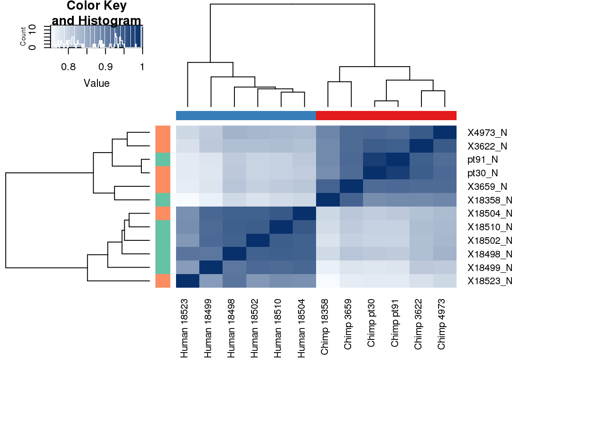
log_counts_genes <- as.data.frame(log2(Genematrix))
plotDensities(log_counts_genes, col=pal[as.numeric(metadata$Species)], legend="topright")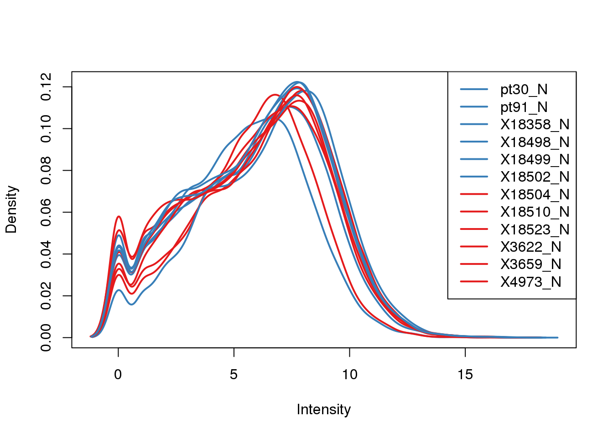
cpm <- cpm(Genematrix, log=TRUE)
plotDensities(cpm, col=pal[as.numeric(metadata$Species)], legend="topright")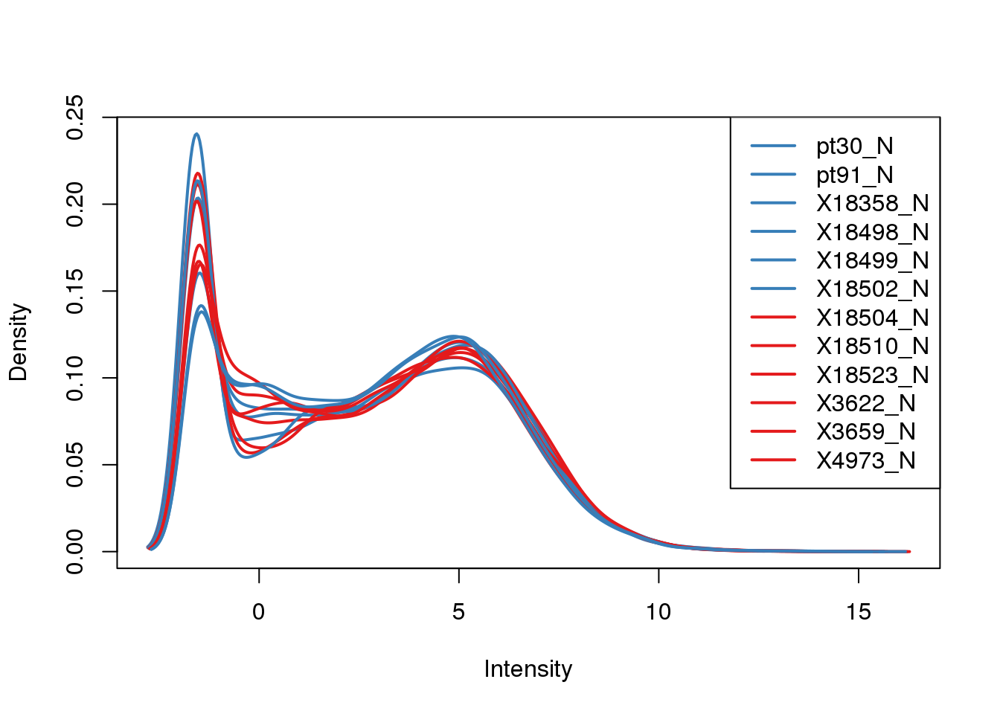
## Create edgeR object (dge) to calculate TMM normalization
dge_original <- DGEList(counts=as.matrix(Genematrix), genes=rownames(Genematrix), group = as.character(t(labels)))
dge_original <- calcNormFactors(dge_original)
tmm_cpm <- cpm(dge_original, normalized.lib.sizes=TRUE, log=TRUE, prior.count = 0.25)
head(cpm) X18498_N X18499_N X18502_N X18504_N X18510_N X18523_N
A1BG 5.983536 5.4183778 5.4098495 4.663320 4.48324922 5.62423862
A1BG-AS1 4.071747 3.4978452 4.1234882 3.262501 3.72249613 3.57914708
A2M 2.142925 -1.5743299 -0.4993838 2.312121 -0.03058551 0.01319229
A4GALT 5.543397 -0.5366276 2.9226146 3.063796 3.91933502 4.74234267
AAAS 4.417342 3.6273229 4.6991559 5.099780 4.44115086 3.65822441
AACS 6.288806 7.4218057 5.7257025 7.208370 6.62098854 6.61684685
X18358_N X3622_N X3659_N X4973_N pt30_N pt91_N
A1BG 6.457101 4.3145111 5.870401 3.4115203 5.5275684 4.9061884
A1BG-AS1 4.355529 2.0046092 3.869027 0.9238313 1.8067853 1.2271781
A2M 6.023206 6.9373362 7.220784 5.6298885 5.4570591 5.0627709
A4GALT 3.710202 -0.1138492 3.898710 -0.3143677 -0.1748582 -0.1380633
AAAS 4.039505 4.4757803 4.758339 4.2295650 4.5165243 4.1312581
AACS 6.002210 5.3341952 5.224647 5.4353906 5.3247138 5.2857423log2cpm plot
plotDensities(tmm_cpm, col=pal[as.numeric(metadata$Species)], legend="topright")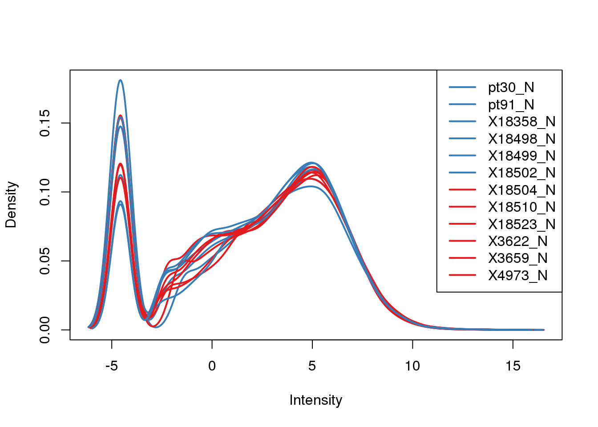
keep.exprs=rowSums(tmm_cpm>2) >8
counts_filtered= Genematrix[keep.exprs,]
plotDensities(counts_filtered, col=pal[as.numeric(metadata$Species)], legend="topright")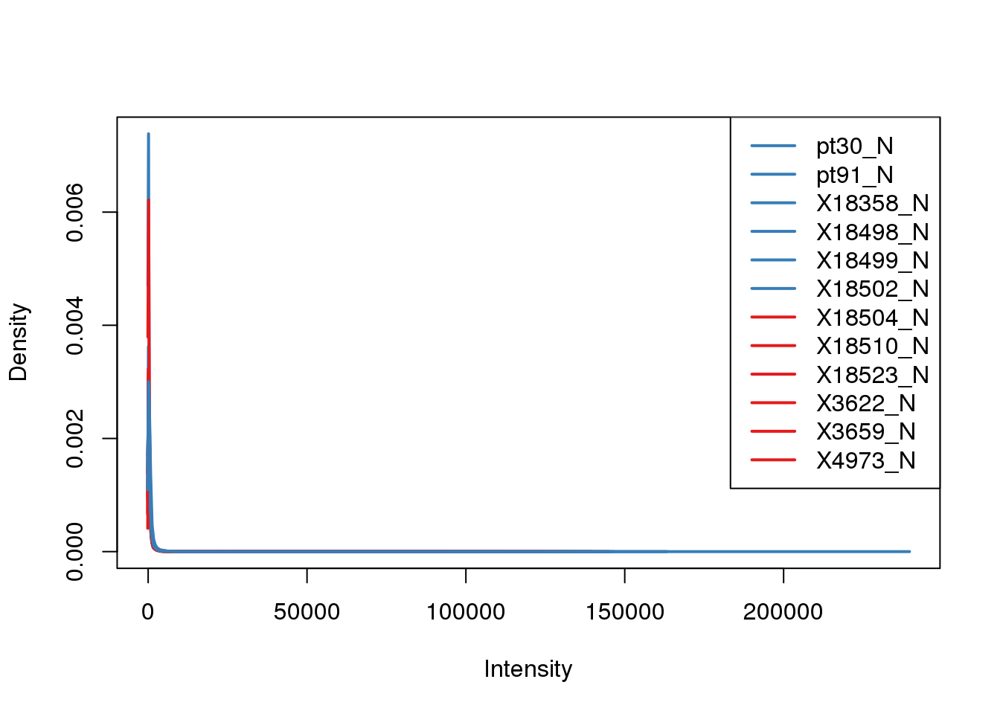
labels <- paste(metadata$Species, metadata$Line, sep=" ")
dge_in_cutoff <- DGEList(counts=as.matrix(counts_filtered), genes=rownames(counts_filtered), group = as.character(t(labels)))
dge_in_cutoff <- calcNormFactors(dge_in_cutoff)
cpm_in_cutoff <- cpm(dge_in_cutoff, normalized.lib.sizes=TRUE, log=TRUE, prior.count = 0.25)
head(cpm_in_cutoff) X18498_N X18499_N X18502_N X18504_N X18510_N X18523_N X18358_N
A1BG 5.957948 5.443869 5.490546 4.616405 4.354045 5.783591 6.492871
A1BG-AS1 4.027659 3.495425 4.189664 3.187911 3.580187 3.711004 4.375357
AAAS 4.378646 3.628186 4.773447 5.057221 4.311390 3.792034 4.054206
AACS 6.264487 7.454726 5.808372 7.175235 6.506229 6.780525 6.036193
AAGAB 6.732123 5.570277 5.833618 6.075778 5.897792 5.243105 6.296532
AAK1 7.239137 7.075132 7.262894 6.601016 6.875455 7.462096 7.348393
X3622_N X3659_N X4973_N pt30_N pt91_N
A1BG 4.517128 5.929125 3.5521872 5.756699 5.035251
A1BG-AS1 2.117826 3.905766 0.8602056 1.916882 1.175998
AAAS 4.680711 4.808601 4.3880096 4.736102 4.250081
AACS 5.547867 5.279265 5.6068936 5.552428 5.418120
AAGAB 6.048714 6.023814 5.8432555 5.820213 5.804474
AAK1 6.456939 6.907735 7.8154504 6.295812 6.384961GenesCutoff=rownames(cpm_in_cutoff)
NormalizedGenesCuttoff=as.data.frame(cbind(Gene_stable_ID=GenesCutoff, cpm_in_cutoff))hist(cpm_in_cutoff, xlab = "Log2(CPM)", main = "Log2(CPM) values for genes meeting the filtering criteria", breaks = 100 )
Species <- factor(metadata$Species)
design <- model.matrix(~ 0 + Species)
head(design) SpeciesChimp SpeciesHuman
1 0 1
2 0 1
3 0 1
4 0 1
5 0 1
6 0 1colnames(design) <- gsub("Species", "", dput(colnames(design)))c("SpeciesChimp", "SpeciesHuman")cpm.voom<- voom(counts_filtered, design, normalize.method="quantile", plot=T)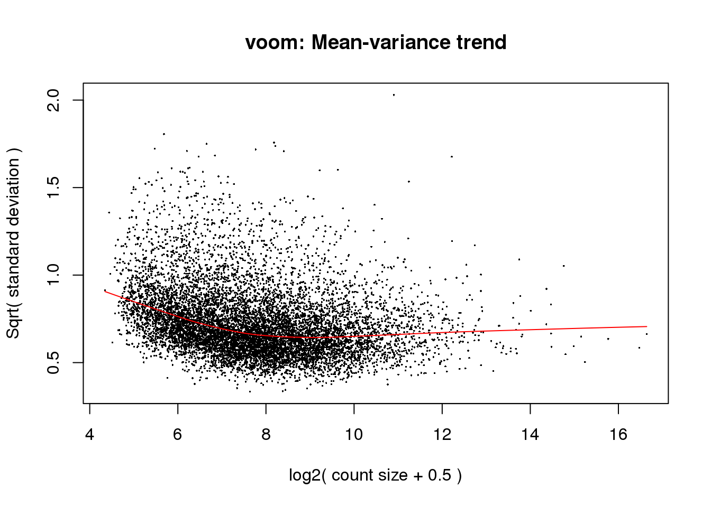
boxplot(cpm.voom$E, col = pal[as.numeric(metadata$Species)],las=2)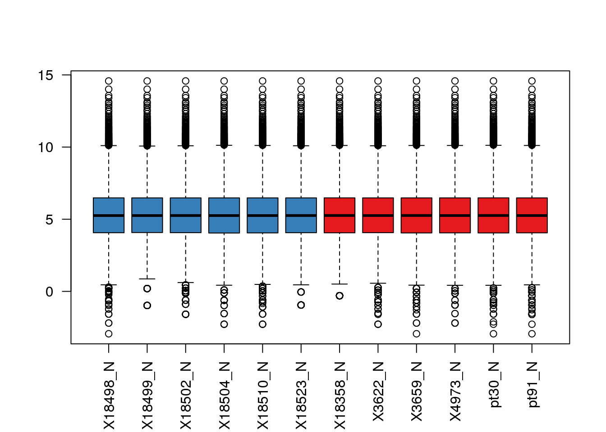
plotDensities(cpm.voom, col = pal[as.numeric(metadata$Species)], legend = "topleft") 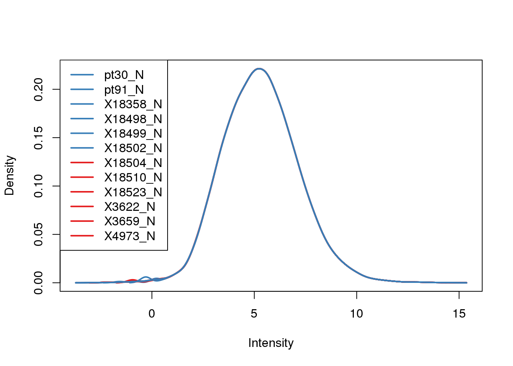
length(GenesCutoff)[1] 9428GenesCutoffDF=as.data.frame(GenesCutoff) %>% rename("genes"=GenesCutoff)
#mkdir ../data/OverlapBenchmark
write.table(GenesCutoffDF,"../../Misprime6/data/OverlapBenchmark/genesPassingCuttoff.txt", col.names = T, row.names = F,quote = F)Filter PAS on these genes and 5%
HumanAnno=read.table("../../Misprime6/Human/data/phenotype/ALLPAS_postLift_LocParsed_Human_Pheno.txt", header = T, stringsAsFactors = F) %>% tidyr::separate(chrom, sep = ":", into = c("chr", "start", "end", "id")) %>% tidyr::separate(id, sep="_", into=c("gene", "strand", "peak")) %>% separate(peak,into=c("loc", "disc","PAS"), sep="-")
IndH=colnames(HumanAnno)[9:ncol(HumanAnno)]
HumanUsage=read.table("../../Misprime6/Human/data/phenotype/ALLPAS_postLift_LocParsed_Human_Pheno_countOnlyNumeric.txt", col.names = IndH)
HumanMean=as.data.frame(cbind(HumanAnno[,1:8], Human=rowMeans(HumanUsage)))
HumanUsage_anno=as.data.frame(cbind(HumanAnno[,1:8],HumanUsage ))ChimpAnno=read.table("../../Misprime6/Chimp/data/phenotype/ALLPAS_postLift_LocParsed_Chimp_Pheno.txt", header = T, stringsAsFactors = F) %>% tidyr::separate(chrom, sep = ":", into = c("chr", "start", "end", "id")) %>% tidyr::separate(id, sep="_", into=c("gene", "strand", "peak")) %>% separate(peak,into=c("loc", "disc","PAS"), sep="-")
IndC=colnames(ChimpAnno)[9:ncol(ChimpAnno)]
ChimpUsage=read.table("../../Misprime6/Chimp/data/phenotype/ALLPAS_postLift_LocParsed_Chimp_Pheno_countOnlyNumeric.txt", col.names = IndC)
ChimpMean=as.data.frame(cbind(ChimpAnno[,1:8], Chimp=rowMeans(ChimpUsage)))
ChimpUsage_anno=as.data.frame(cbind(ChimpAnno[,1:8],ChimpUsage ))BothMean=ChimpMean %>% full_join(HumanMean, by=c("chr","start","end","gene" ,"strand", "loc", "disc","PAS" ))
BothMeanM=melt(BothMean,id.vars =c("chr","start","end","gene" ,"strand", "loc", "disc","PAS" ),variable.name = "Species", value.name = "MeanUsage" ) %>% filter(loc !="008559", loc != "009911")ggplot(BothMeanM, aes(x=loc, y=MeanUsage,by=Species,fill=Species)) + geom_boxplot() + scale_fill_brewer(palette = "Dark2")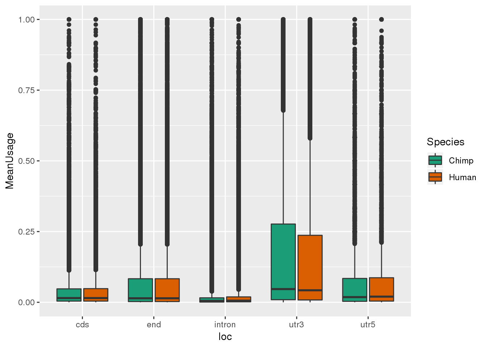
ggplot(BothMeanM, aes(x=MeanUsage,by=Species,col=Species)) + stat_ecdf(geom = "point", alpha=.25) + scale_color_brewer(palette = "Dark2") + labs(title="Cumulative Distribution plot for PAS Usage", x="Mean Usage- both fractions", y="F(Mean Usage)")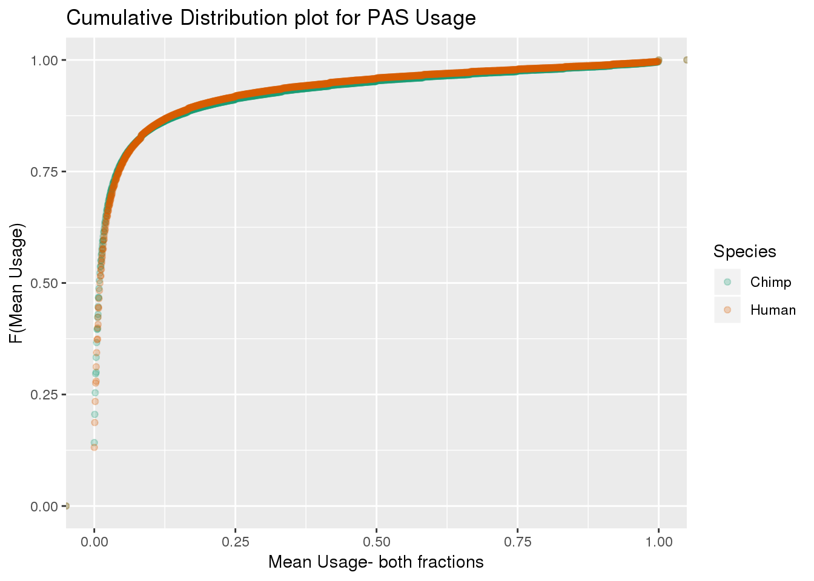
Implement cutoffs for gene expression and usage.
BothMean_5= BothMean %>% filter(Chimp >=0.05 | Human >= 0.05,gene %in% GenesCutoffDF$genes) BothMean_5M=melt(BothMean_5,id.vars =c("chr","start","end","gene" ,"strand", "loc", "disc","PAS" ),variable.name = "Species", value.name = "MeanUsage" ) %>% filter(loc !="008559")
ggplot(BothMean_5M, aes(x=loc, y=MeanUsage,by=Species,fill=Species)) + geom_boxplot() + scale_fill_brewer(palette = "Dark2")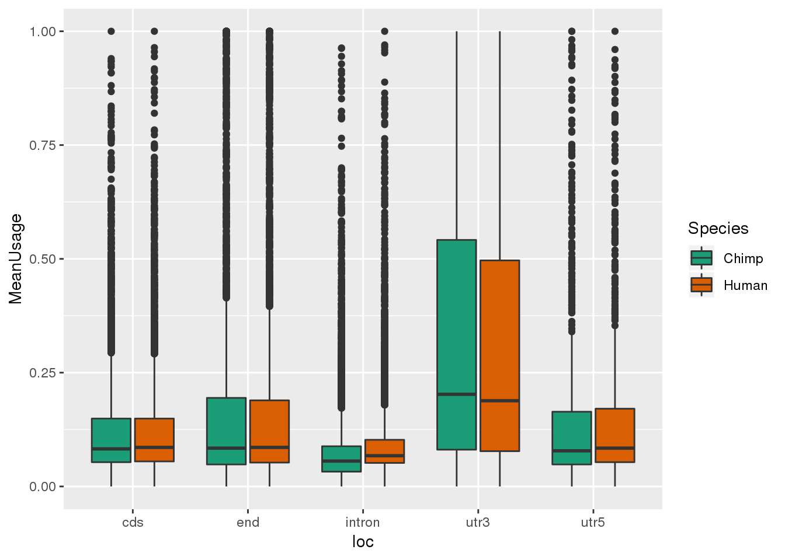
ggplot(BothMean_5M, aes(x=MeanUsage,by=Species,col=Species)) + stat_ecdf(geom = "point", alpha=.25) + scale_color_brewer(palette = "Dark2") + labs(title="Cumulative Distribution plot for PAS Usage at 5%", x="Mean Usage- both fractions", y="F(Mean Usage)") 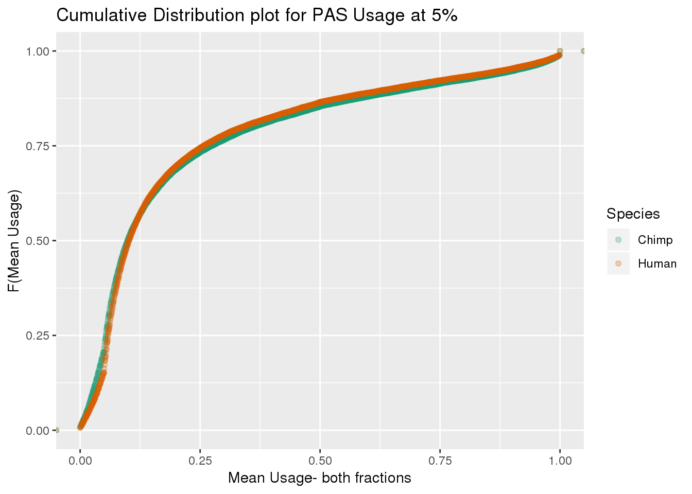
ggplot(BothMean_5M, aes(x=MeanUsage,by=Species,fill=Species)) + geom_histogram(alpha=.5, bins=30, position = "dodge") + scale_fill_brewer(palette = "Dark2")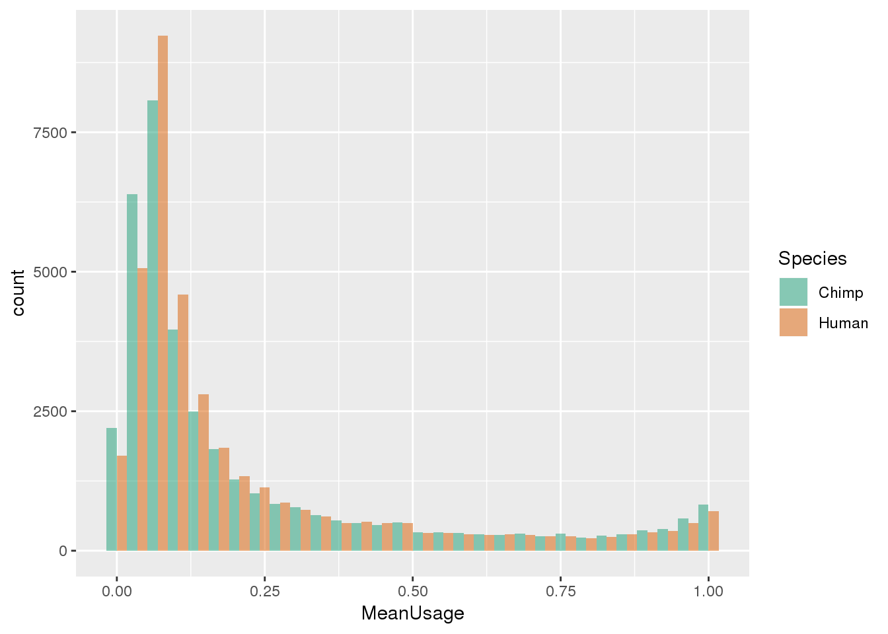
mkdir ../data/Peaks_5perc
mkdir ../data/Pheno_5percBothMean_5_out=BothMean_5 %>% dplyr::select(PAS,disc, gene, loc,chr, start, end,Chimp, Human)
write.table(BothMean_5_out, "../../Misprime6/data/Peaks_5perc/Peaks_5perc_either_bothUsage.txt", row.names = F, col.names = T, quote = F)
BothMean_5_out_noUN=BothMean_5 %>% dplyr::select(PAS,disc, gene, loc,chr, start, end,Chimp, Human) %>% filter(!grepl("Un",chr))
write.table(BothMean_5_out_noUN, "../../Misprime6/data/Peaks_5perc/Peaks_5perc_either_bothUsage_noUnchr.txt", row.names = F, col.names = T, quote = F)
#write bed with human coord for igv
BothMean_5_bed=BothMean_5 %>% dplyr::select(chr, start, end, PAS, Human, strand)
write.table(BothMean_5_bed,"../../Misprime6/data/Peaks_5perc/Peaks_5perc_either_HumanCoordHummanUsage.bed", row.names = F, col.names = T, quote = F)
ggplot(BothMean_5_out, aes(x=disc, fill=disc))+ geom_bar(aes(y = (..count..)/sum(..count..)))+ scale_fill_brewer(palette = "Dark2")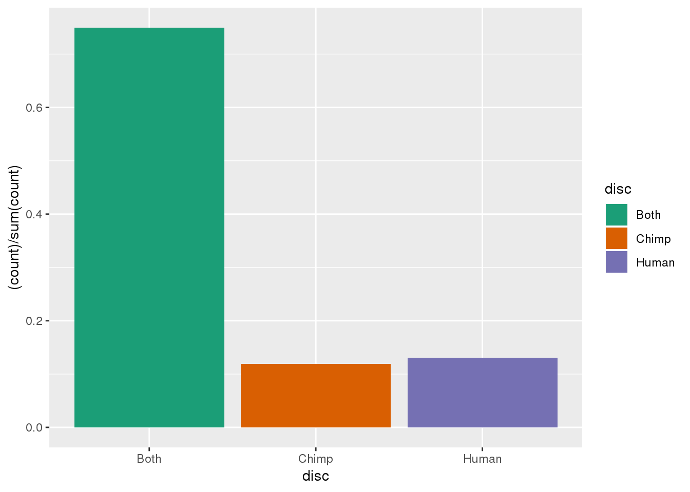
BothMean_5_outmean= BothMean_5_out %>% mutate(meanUsage=(Human+Chimp)/2)
ggplot(BothMean_5M, aes(x=disc, by= Species, fill=Species, y=MeanUsage)) + geom_boxplot() + scale_y_log10()+ scale_fill_brewer(palette = "Dark2")Warning: Transformation introduced infinite values in continuous y-axisWarning: Removed 516 rows containing non-finite values (stat_boxplot).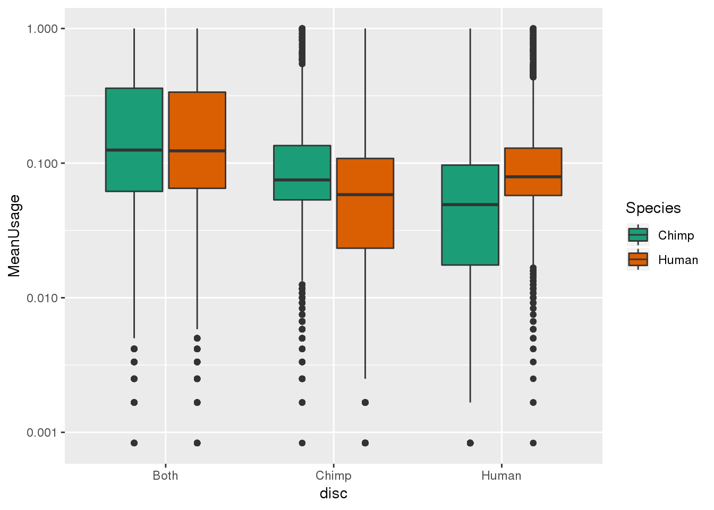
ChimpUsage_anno_5perc= ChimpUsage_anno %>% filter(PAS %in% BothMean_5$PAS)
write.table(ChimpUsage_anno_5perc, "../../Misprime6/data/Pheno_5perc/Chimp_Pheno_5perc.txt", row.names = F, col.names = T, quote = F)
HumaUsage_anno_5perc= HumanUsage_anno %>% filter(PAS %in% BothMean_5$PAS)
write.table(HumaUsage_anno_5perc, "../../Misprime6/data/Pheno_5perc/Human_Pheno_5perc.txt", row.names = F, col.names = T, quote = F)
sessionInfo()R version 3.5.1 (2018-07-02)
Platform: x86_64-pc-linux-gnu (64-bit)
Running under: Scientific Linux 7.4 (Nitrogen)
Matrix products: default
BLAS/LAPACK: /software/openblas-0.2.19-el7-x86_64/lib/libopenblas_haswellp-r0.2.19.so
locale:
[1] LC_CTYPE=en_US.UTF-8 LC_NUMERIC=C
[3] LC_TIME=en_US.UTF-8 LC_COLLATE=en_US.UTF-8
[5] LC_MONETARY=en_US.UTF-8 LC_MESSAGES=en_US.UTF-8
[7] LC_PAPER=en_US.UTF-8 LC_NAME=C
[9] LC_ADDRESS=C LC_TELEPHONE=C
[11] LC_MEASUREMENT=en_US.UTF-8 LC_IDENTIFICATION=C
attached base packages:
[1] stats graphics grDevices utils datasets methods base
other attached packages:
[1] reshape2_1.4.3 RColorBrewer_1.1-2 scales_1.0.0
[4] edgeR_3.24.0 limma_3.38.2 R.utils_2.7.0
[7] R.oo_1.22.0 R.methodsS3_1.7.1 gplots_3.0.1
[10] forcats_0.3.0 stringr_1.3.1 dplyr_0.8.0.1
[13] purrr_0.3.2 readr_1.3.1 tidyr_0.8.3
[16] tibble_2.1.1 ggplot2_3.1.1 tidyverse_1.2.1
loaded via a namespace (and not attached):
[1] Rcpp_1.0.2 locfit_1.5-9.1 lubridate_1.7.4
[4] lattice_0.20-38 gtools_3.8.1 assertthat_0.2.0
[7] rprojroot_1.3-2 digest_0.6.18 R6_2.3.0
[10] cellranger_1.1.0 plyr_1.8.4 backports_1.1.2
[13] evaluate_0.12 httr_1.3.1 pillar_1.3.1
[16] rlang_0.4.0 lazyeval_0.2.1 readxl_1.1.0
[19] rstudioapi_0.10 gdata_2.18.0 whisker_0.3-2
[22] rmarkdown_1.10 labeling_0.3 munsell_0.5.0
[25] broom_0.5.1 compiler_3.5.1 httpuv_1.4.5
[28] modelr_0.1.2 pkgconfig_2.0.2 htmltools_0.3.6
[31] tidyselect_0.2.5 workflowr_1.6.0 crayon_1.3.4
[34] withr_2.1.2 later_0.7.5 bitops_1.0-6
[37] grid_3.5.1 nlme_3.1-137 jsonlite_1.6
[40] gtable_0.2.0 git2r_0.26.1 magrittr_1.5
[43] KernSmooth_2.23-15 cli_1.1.0 stringi_1.2.4
[46] fs_1.3.1 promises_1.0.1 xml2_1.2.0
[49] generics_0.0.2 tools_3.5.1 glue_1.3.0
[52] hms_0.4.2 yaml_2.2.0 colorspace_1.3-2
[55] caTools_1.17.1.1 rvest_0.3.2 knitr_1.20
[58] haven_1.1.2